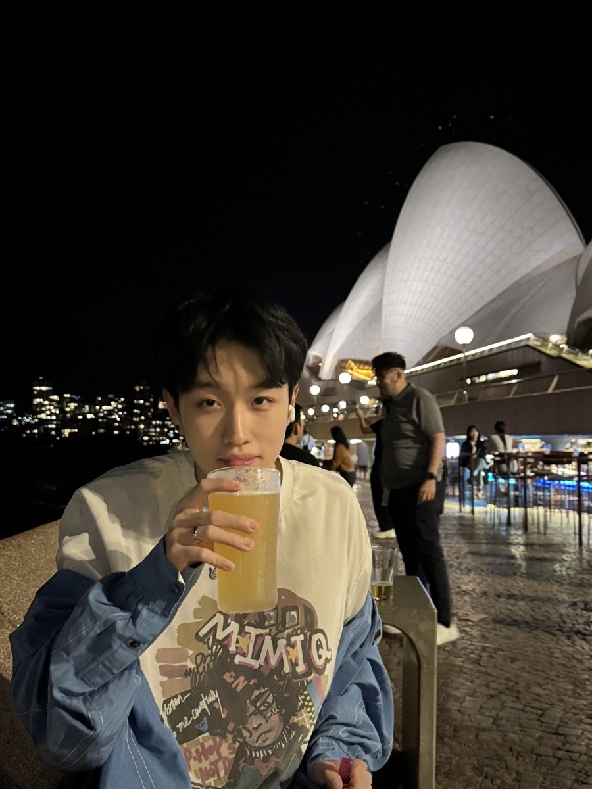

AI × PRODUCT × PEOPLE
Ideas into
things that
work.
I'm Tianjun. I turn complex problems into
useful products—with AI, data, and a human point of view.
A LITTLE STRUCTURE. A LITTLE PLAY.
PRODUCT THINKING. HANDS-ON BUILDING.SYDNEY & SHENZHEN01 / 04
01 — SELECTED WORK
From question
to something real.
Products, experiments, and workflows.
Built around what people actually need.
02 — A BIT ABOUT ME
Curious by nature.
Practical by choice.
I'm a Master of Data Science candidate at the University of Sydney, working at the intersection of AI, product, and real-world problems.

03 — SAY HELLO